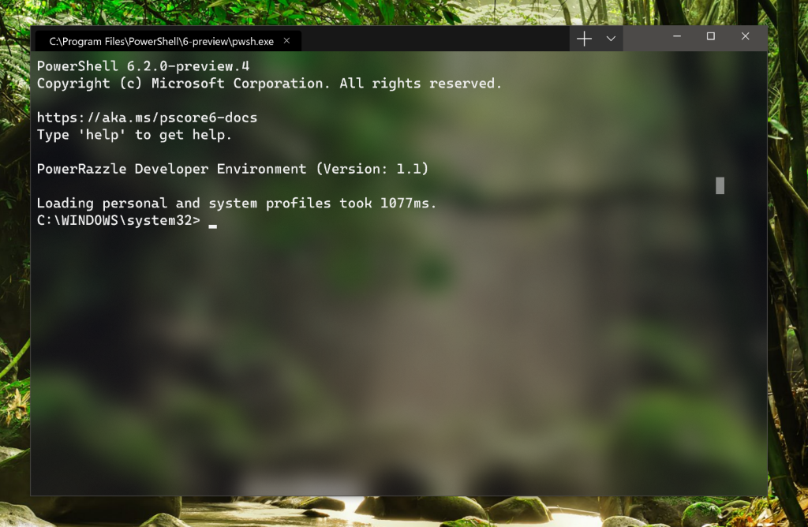
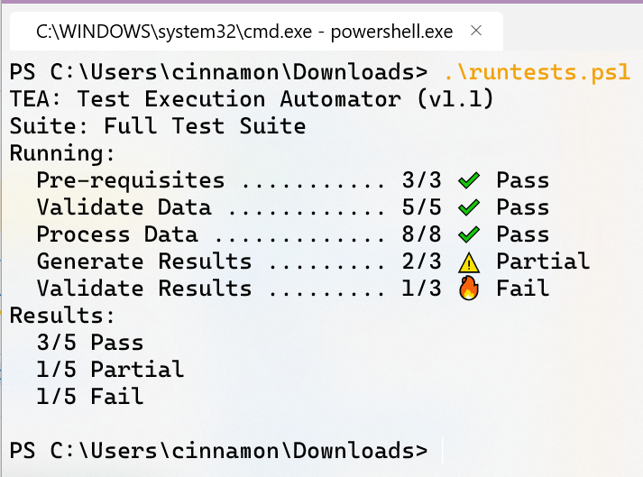

Microsoft unveils Windows Terminal, a new command line for Windows
Windows Terminal is a new, modern, fast, efficient, powerful, and productive terminal application users of command-line tools and shells like
Command Prompt, PowerShell, and WSL.
Microsoft is trying to make windows comfortable to developers. It released windows subsystem for linux, enabling developers to use the Bash shell scripts etc..
Now it is developing a windows terminal which is the central location for access to environments like PowerShell, Cmd, and the Windows Subsystem for Linux (WSL).
Microsoft is adding multiple tab support alongside theming and customization for developers who want to tweak the Terminal app.

Windows terminal is coming with new theme.

You can have multiple tabs and in each app you can open your favorite app like cmd, PowerShell, Ubuntu/WSL etc.

Windows terminal is coming with new font and with emoji's.
New terminal will be avilable may be in mid June.
windows terminal is made opensource!, so you can clone, build, run, and test code from the repository on
GitHub: https://github.com/Microsoft/Terminal
☰
Microsoft unveils Windows Terminal, a new command line for Windows
Windows Terminal is a new, modern, fast, efficient, powerful, and productive terminal application for users of command-line tools and shells like Command Prompt, PowerShell, and WSL.
Microsoft is trying to make windows comfortable to developers. It released windows subsystem for linux, enabling developers to use the Bash shell scripts etc..
Now it is developing a windows terminal which is the central location for access to environments like PowerShell, Cmd, and the Windows Subsystem for Linux (WSL).
Microsoft is adding multiple tab support alongside theming and customization for developers who want to tweak the Terminal app.

Windows terminal is coming with new theme.

You can have multiple tabs and in each app you can open your favorite app like cmd, PowerShell, Ubuntu/WSL etc.

Windows terminal is coming with new font and with emoji's.
New terminal will be avilable may be in mid June.
windows terminal is made opensource!, so you can clone, build, run, and test code from the repository on
GitHub: https://github.com/Microsoft/Terminal